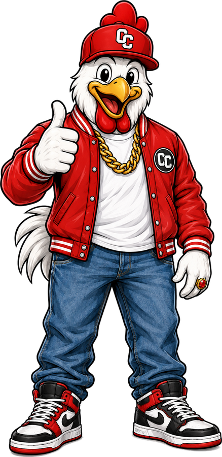
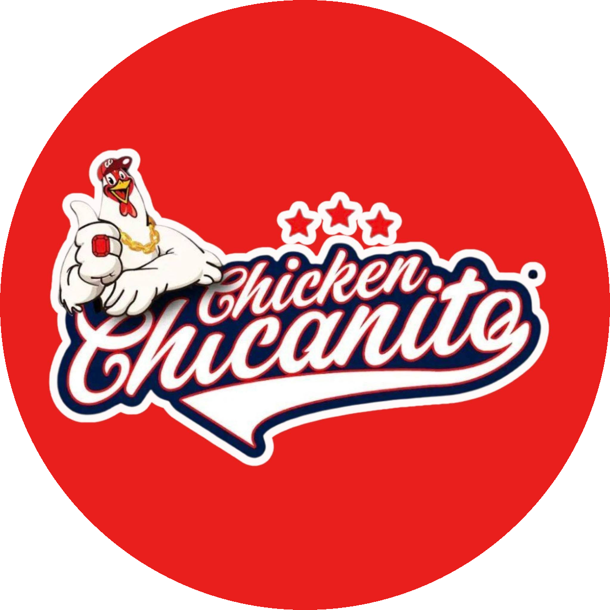
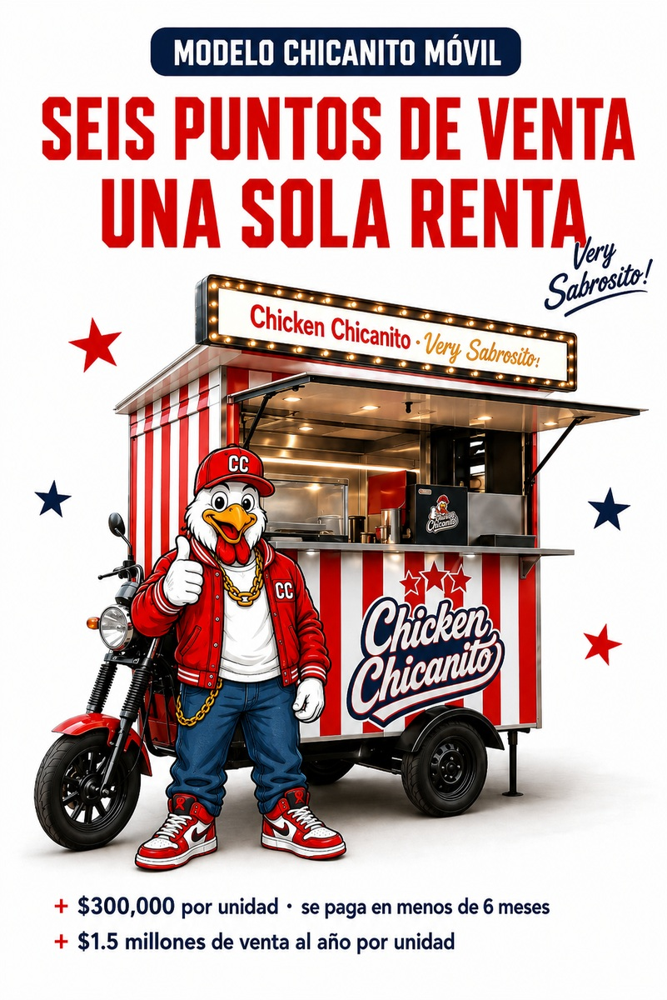

Memorándum de inversión · Confidencial
Tienda Insignia
Ciudad de México
Una sociedad de capital para replicar en la Ciudad de México una operación con más de veinte años de historial verificable.
$9.8M
Venta anual · Jojutla
MES 19
Recuperación de capital
Chicken Chicanito · Jojutla, Morelos
Preparado por Miguel Enrique Portilla
Agosto de 2026 · Documento complementario a capital.chicanito.app
01 · Resumen ejecutivo
Veinte años operando.
Cero años experimentando.
Chicken Chicanito opera desde hace más de veinte años una rosticería en Jojutla, Morelos, que en los últimos doce meses vendió $9,828,017 en una sola ubicación — sin mesas, sin servicio a domicilio y sin haber salido nunca a la calle.
Buscamos un socio capitalista para abrir la primera Tienda Insignia de la marca en la Ciudad de México, junto con cinco puntos de venta móviles asociados a ella.
El socio aporta el capital. Chicanito aporta la marca, las recetas, los procesos y la operación completa — no una parte, no un acompañamiento: la operación entera, todos los días.
El socio recupera la totalidad de su aportación antes de que Chicanito reciba un solo peso de utilidad. En el primer año completo de operación, el resultado íntegro del negocio se destina a devolverle su dinero.
Lo que sigue explica por qué el modelo funciona, cómo se reparte el dinero y qué puede salir mal.
02 · El problema y la respuesta
Nunca tuvimos un problema de demanda.
Tuvimos uno de inmovilidad.
Una rosticería con local fijo paga renta, nómina y equipo las veinticuatro horas, pero concentra su venta en unas pocas.
En Jojutla lo medimos con precisión: el 63% de la venta ocurre entre la una y las cuatro de la tarde. A las nueve de la mañana la operación factura menos de cuatrocientos pesos. Después de las cinco, prácticamente se detiene.
La infraestructura ya pagada —el horno, la cámara, el personal, la capacidad de producción— permanecía ociosa la mayor parte del día. La respuesta fue dejar de esperar al cliente en un solo punto.
El modelo
La Tienda Insignia opera simultáneamente como punto de venta y como centro de distribución de cinco unidades Chicanito Móvil. Cada mañana, en la hora de menor actividad, las unidades cargan producto y se distribuyen hacia donde la demanda ya existe: escuelas, zonas empresariales, parques industriales. Regresan al cierre.
Misma renta. Mismo equipo. Misma nómina base.
Seis puntos de venta.

Modelo Chicanito Móvil · seis puntos de venta sobre una sola renta
Las unidades no llevan equipo de cocción: el producto sale terminado desde la tienda. Eso permite que cada una cueste $300,000 en lugar de varias veces esa cifra, y que su operación anual completa —gasolina, mantenimiento, seguro y permisos— cueste $14,200.
Vendiendo veintisiete pollos al día, un supuesto conservador, cada unidad genera cerca de $1.5 millones de venta al año y se paga a sí misma en menos de seis meses.
Solo la primera unidad usa capital del socio
Las cuatro restantes se financian con el flujo que el propio negocio genera, una por año. El socio no vuelve a poner dinero.
03 · La evidencia
Esto no es un modelo hipotético.
Es una operación con historial verificable en sistema de punto de venta.
6
Meses consecutivos al alza
78.5%
Ingreso en 12 productos
Todo se lo llevan
Chicken Chicanito no tiene mesas. El cien por ciento de la venta sale por la puerta. El producto ya viaja y el cliente ya lo acepta así — no es un supuesto del modelo, es como opera el negocio desde el primer día. Esto es precisamente lo que hace que las unidades móviles funcionen.
La capacidad ya está instalada y pagada
El 24 y el 31 de diciembre despachamos más de cuatrocientos tickets en un día, contra un promedio normal de ciento setenta y cinco. La planta de Jojutla puede abastecer la operación de Ciudad de México sin inversión adicional.
El punto de comparación
Una rosticería bien establecida en México factura entre cincuenta y ciento cincuenta mil pesos al mes. Jojutla hace $818,000. Cinco veces y media el techo de lo que la industria considera un buen resultado.
Por qué esto no es una franquicia
El valor de Chicken Chicanito no está solo en la receta. Está en la consistencia con la que esa receta se ejecuta todos los días: cómo se compra el pollo, cómo se marina, cómo se conserva la cadena de frío, cómo se hornea, cómo se presenta, cómo se atiende al cliente. Esa consistencia se construyó a lo largo de veinte años de corregir detalles.
Un activo así no se transfiere junto con una licencia. Se pierde en el momento en que la operación pasa a manos de un tercero que no comparte el mismo estándar. Es la razón por la que las franquicias de alimentos varían de sucursal a sucursal.
Por eso no franquiciamos ni licenciamos: la operación permanece, sin excepción, a cargo de Chicanito. El socio está comprando la diferencia entre abrir un restaurante y comprar uno que ya funciona.
04 · Cómo se reparte el dinero
Primero recuperas tu dinero.
Después repartimos.
Chicanito cobra por operar
Con cargo a los costos del negocio, y con independencia del resultado, Chicanito percibe 2% de las ventas netas: 1% por la operación y 1% para el fondo de marca y publicidad. Cubre el costo real de supervisión, capacitación, sistemas y sostenimiento de la marca. No es utilidad.
De dónde viene ese número
El modelo original contemplaba 7% —una regalía de 6% más 1% de publicidad, lo estándar en franquicias de alimentos. Lo bajamos a 2% deliberadamente, y los cinco puntos que soltamos se convirtieron en participación en la utilidad, que solo cobramos después de que el socio recupere su capital. Nos interesa más que este proyecto crezca y que sus inversionistas obtengan retornos, que ganar dinero desde el primer mes.
La utilidad se reparte en tres escalones
1
Recuperas tu capital
El 100% de la utilidad es para el socio hasta recuperar íntegramente su aportación. Chicanito no recibe utilidad alguna. Mes 19 en la proyección de referencia.
2
Retorno preferente · 60% para el socio
El sesenta por ciento es del socio y el cuarenta de Chicanito, hasta que el socio acumule dos veces su aportación. Alrededor del mes 34.
3
Mitad y mitad
Una vez duplicado el capital, la utilidad se reparte en partes iguales, de forma permanente.
RECUPERACIÓN DE CAPITAL
PREFERENTE 60/40
REPARTO 50/50
Mes 1 — 19Mes 19 — 34Mes 34 — 60
El principio es simple: vas adelante mientras tu capital está en riesgo, y nos emparejamos cuando ya dejó de estarlo.
Si la Tienda Insignia no genera utilidad, no hay distribución. Para nadie. Las distribuciones se calculan mensualmente y se pagan dentro de los primeros diez días del mes siguiente, previa reserva del capital de trabajo acordado.
05 · Los números
La proyección, completa.
Basada en el modelo financiero calibrado contra la operación real de Jojutla. Son proyecciones, no garantía de resultados.
Ventas proyectadas
| Concepto | Año 1 | Año 2 | Año 3 | Año 4 | Año 5 |
|---|
| Venta total | $8.5M | $14.8M | $20.9M | $24.1M | $26.8M |
| Unidades móviles activas | 1 | 2 | 3 | 4 | 5 |
Distribución año por año
| Año | Utilidad distribuible | Al socio | A Chicanito |
|---|
| 1 | $1,774,388 | $1,774,388 | $0 |
| 2 | $3,268,583 | $2,595,224 | $673,359 |
| 3 | $4,968,337 | $2,875,758 | $2,092,579 |
| 4 | $5,831,021 | $2,915,510 | $2,915,510 |
| 5 | $6,558,920 | $3,279,460 | $3,279,460 |
| Total | $22,401,249 | $13,440,340 | $8,960,909 |
Resultado para cada parte a cinco años
| Concepto | El socio | Chicanito |
|---|
| Aporta | $3,359,573 | Marca, procesos y operación |
| Participación en utilidad | $13,440,340 | $8,960,909 |
| Contraprestación por operar (2%) | — | $1,901,763 |
| Total recibido | $13,440,340 | $10,862,672 |
El socio recibe más que el operador, en pesos. Es intencional. Es quien puso el capital y quien corre el riesgo.
06 · Qué aporta cada parte
Capital de un lado.
Operación completa del otro.
El socio aporta capital, y nada más
| Concepto | Monto estimado | |
|---|
| Equipamiento de la tienda (hornos, cámara, línea) | $1,500,000 | variable |
| Adaptación del local | $400,000 | variable |
| Primera unidad Chicanito Móvil | $300,000 | variable |
| Depósito de arrendamiento | $105,000 | variable |
| Capital de trabajo (3 meses) | $554,573 | variable |
| Trámites, constitución y arranque | $500,000 | tope fijo |
| Total estimado | $3,359,573 | |
Una sola cifra está blindada, y es a propósito
Las partidas marcadas como variables son estimaciones: su monto definitivo depende del local que se contrate y de las condiciones de mercado al comprar el equipo. Se presupuestan con precisión una vez identificada la ubicación, y se autorizan contigo antes de ejercerse.
La partida de trámites, constitución y arranque es la única excepción: es un tope fijo de $500,000. Cualquier costo de constitución, permisos, licencias, gestoría o gasto de apertura por encima de esa cifra lo absorbe Chicanito, sin cargo para el socio ni para la sociedad.
Es la partida más difícil de estimar de antemano y la más fácil de inflar sobre la marcha. Un número presentado en este documento no debería crecer después de firmado.
Chicanito aporta
- Uso de las marcas Chicken Chicanito, ROSTI y CRUJI
- Recetas, procesos y manuales de operación de Tienda Insignia y de Chicanito Móvil
- Contratación, capacitación y gestión de todo el personal
- Cadena de suministro desde Jojutla, con transporte y logística a su cargo
- Estrategia comercial y de redes sociales
- Sistemas de control y punto de venta
El producto se transfiere de Jojutla a la Tienda Insignia a costo directo de insumos, sin margen, con precio de referencia de $80 por pieza, auditable y revisable anualmente contra costo real. Chicanito no gana en el abastecimiento: gana cuando el negocio genera utilidad.
07 · Estructura y control
El socio no opera.
Pero tampoco queda a ciegas.
Cómo se estructura
La inversión se realiza en una sociedad de propósito específico titular de la Tienda Insignia y sus cinco unidades móviles — no en la sociedad titular de la marca.
El socio compra participación en un negocio concreto y medible: una tienda con seis puntos de venta, con perímetro contable propio, resultados auditables y una salida identificable. No en un activo intangible cuya valuación sería materia de discusión. La figura jurídica específica se define con los asesores legales y fiscales de ambas partes.
Lo que sí controla el socio
- Aprueba el presupuesto anual. No las decisiones dentro del presupuesto, sino el presupuesto mismo.
- Acceso al punto de venta en tiempo real. Ve la venta el mismo día que ocurre, desde su teléfono.
- Cuenta bancaria exclusiva del proyecto, separada de cualquier otra operación de Chicanito.
- Estados financieros mensuales y derecho de auditoría anual con auditor propio.
- Materias reservadas: venta del negocio, contratación de deuda, inversiones no presupuestadas, cambio de local, disolución, admisión de nuevos socios.
- Cláusula de desempeño: si la operación queda significativamente por debajo del presupuesto durante dos trimestres consecutivos, el socio puede convocar una revisión formal y, en su caso, activar su salida.
Ninguno de estos mecanismos toca la ejecución operativa. Todos reducen la asimetría de información, que es el riesgo real de un socio que no opera.
08 · Qué puede salir mal
Los presentamos porque van a surgir de todos modos.
Y preferimos que salgan de nosotros.
Operación en vía pública en Ciudad de México
El modelo supone que las cinco unidades móviles operan en calle, como lo hacen miles de unidades de alimentos en la ciudad. Si la autoridad restringe esa operación, se afecta una parte relevante de la proyección.
Mitigación · Plan alternativo con ubicaciones en predio privado y convenios con centros de trabajo y plazas comerciales. La contraprestación de Chicanito se suspende respecto de la venta móvil no realizada mientras dure una restricción.
Dependencia de una sola planta
El producto sale de Jojutla refrigerado, con vida de anaquel de dos a tres días, en envíos de dos a tres veces por semana. Una interrupción prolongada detiene la operación.
Mitigación · Chicanito garantiza el abastecimiento y, ante una interrupción imputable a ella, debe habilitar una fuente alternativa a su costa.
Una plaza nueva se construye
Jojutla tiene veinte años de clientela. Ciudad de México empieza de cero en reconocimiento local.
Mitigación · Las proyecciones del año 1 son deliberadamente conservadoras frente a lo que ya genera Jojutla, precisamente por esta razón.
Concentración operativa
El modelo depende de que Chicanito ejecute bien. Es la misma condición que lo hace valioso: no se puede tener consistencia sin concentración.
Mitigación · La cláusula de desempeño y el derecho de salida del socio existen precisamente para acotar este riesgo.
Sobre el margen
La proyección muestra un margen neto de 21% a 26%, por encima del 15–20% habitual en el sector restaurantero. La razón es concreta: la contraprestación de marca y operación es de 2% de las ventas, no del 6–7% usual en franquicias de alimentos. Ese diferencial permanece dentro de la unidad, es decir, dentro del negocio del socio.
09 · Los siguientes pasos
Cinco pasos, en este orden.
1
Conversación inicial
Sobre este documento y las preguntas que genere.
2
Simulador financiero interactivo
Acceso al modelo completo en capital.chicanito.app para explorar escenarios con sus propios supuestos, no solo con los nuestros. Cada variable se mueve y el resultado se recalcula al instante.
3
Visita a Jojutla
En domingo, que es el día más fuerte: la cocina a tope, la fila en el mostrador y la unidad móvil cargando. Nadie debería invertir en una operación que no ha visto funcionar.
4
Hoja de términos
Con las condiciones específicas, para revisión de sus asesores legales y fiscales.
5
Contratos definitivos y constitución
Sociedad, operación, licencia de marca y suministro.
Hay una sola Tienda Insignia disponible para Ciudad de México, y quien la desarrolle define su ubicación antes que cualquier otro socio: la zona y los cinco puntos donde operarán las unidades móviles.
Más de veinte años de operación, un producto probado y una estructura donde la operación completa está a cargo de quien ya sabe operarla.
Lo único que falta
es el capital.
El simulador completo, con todas las variables ajustables, está disponible en línea con su clave de acceso.
Documento interactivo
capital.chicanito.app
Miguel Enrique Portilla · infochicanito@gmail.com
Documento confidencial, preparado exclusivamente para su destinatario. No constituye oferta pública ni intermediación bursátil. Los datos de Jojutla provienen del sistema de punto de venta y corresponden al periodo agosto 2025 – julio 2026. Las cifras de Ciudad de México son proyecciones basadas en esa operación y no constituyen garantía de resultados.
Chicken Chicanito® · Very Sabrosito!